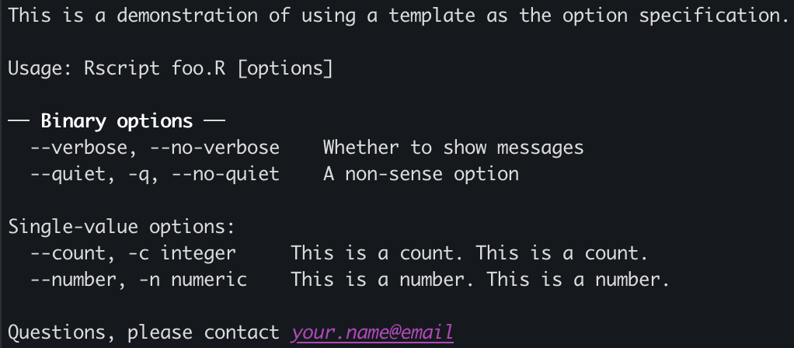

Customizing help messages
Zuguang Gu (guzuguang@suat-sz.edu.cn)
2026-11-25
Source:vignettes/help.Rmd
help.Rmd## Warning: package 'knitr' was built under R version 4.6.1Automatically generat help message
The help message is automatically generated according to the argument specifications. The following code shows the help message from scalar arguments.
argitect(
"number=i", "Number of items.",
"cutoff=f", "Cutoff for filtering results.",
"verbose!", "Print messages.",
"file=s#", "Input file."
)For each argument, it prints the full argumnet name (as well as the
alias names if they are provided), the data mode, the flag letter (if
the first letter is unique). Positional argument name is marked by
<> which means the name is not necessary to specify.
Positional argument is explicitely added to “Usage” if it is the first
or the last option specified in argitect().
Two additional arguments help and verbose
are inserted to the end.
Usage: Rscript foo.R [options] [file]
Options:
--number, -n integer
Number of items.
--cutoff, -c numeric
Cutoff for filtering results.
--verbose, --no-verbose
Print messages.
[default: off]
<file> character
Input file.
--help, -h
Print help message and exit.
--version
Print version information and exit. For the vector or hash arguments, the data mode text is adjusted accordingly.
argitect(
"number=i@", "Number of items.",
"cutoff=f%", "Cutoff for filtering results.",
"file=s#{}", "Input files."
)Usage: Rscript foo.R [options] [file...]
Options:
--number, -n [integer, ...]
Number of items.
--cutoff, -c {name=numeric, ...}
Cutoff for filtering results.
<file> [character, ...]
Input files.
--help, -h
Print help message and exit.
--version, -v
Print version information and exit. When there are constraints on the vector arguments, the range is added to the data mode text.
argitect(
"number1=i@{2,3}", "Number of items.",
"number2=i@{,3}", "Number of items.",
"number3=i@{2,}", "Number of items.",
"file=s#{3}", "Input files."
)Usage: Rscript foo.R [options] [file...]
Options:
--number1 [integer, 2-3]
Number of items.
--number2 [integer, 1-3]
Number of items.
--number3 [integer, 2+]
Number of items.
<file> [character, 3]
Input files.
--help, -h
Print help message and exit.
--version, -v
Print version information and exit. For @ and #, a pre-defined set of names can
be added.
argitect(
"number1=i@{foo,bar}", "Number of items.",
"number2=i@{foo,bar,}", "Number of items.",
"file=s#{foo,bar}", "Input files."
)Usage: Rscript foo.R [options] [file]
Options:
--number1 [foo=integer, bar=integer]
Number of items.
--number2 [foo=integer, bar=integer, ...]
Number of items.
<file> [<foo>=character, <bar>=character]
Input files.
--help, -h
Print help message and exit.
--version, -v
Print version information and exit. For % with pre-defined names, see Documenting sub-arguments
section.
If default values for some arguments are already provided, they are also added to the help message.
number = 2L
cutoff = 0.05
file = "foo.txt"
argitect(
"number=i", "Number of items.",
"cutoff=f", "Cutoff for filtering results.",
"verbose!", "Print messages.",
"file=s#", "Input file."
)Usage: Rscript foo.R [options] [file]
Options:
--number, -n integer
Number of items.
[default: 2]
--cutoff, -c numeric
Cutoff for filtering results.
[default: 0.05]
--verbose, --no-verbose
Print messages.
[default: off]
<file> character
Input file.
[default: foo.txt]
--help, -h
Print help message and exit.
--version
Print version information and exit. One-column and two-column styles
The default style is one-column. help_style can be set
to two-column so that in the two-column layout, argument
names are in the left column and descriptions are in the second
column.
argitect(
"number=i@", "Number of items.",
"cutoff=f@", "Cutoff for filtering results.",
"verbose!", "Print messages.",
help_style = "two-column"
)Usage: Rscript foo.R [options]
Options:
--number, -n [integer, ...] Number of items.
--cutoff, -c [numeric, ...] Cutoff for filtering results.
--verbose, --no-verbose Print messages.
[default: off]
--help, -h Print help message and exit.
--version Print version information and exit. The style can also be set globally:
argitect_options("help_style" = "two-column")The argument name column can be controlled by adding a second value
to help_width, which controls the width of the first column
in the two-column style.
argitect(
"number|a|b|c|d|e|f|g|h|i|j|k|l|m|n=i", "Number of items.",
"cutoff=f", "Cutoff for filtering results.",
"verbose!", "Print messages.",
help_style = "two-column",
help_width = c(90, 50)
)Usage: Rscript foo.R [options]
Options:
--number, -a, -b, -c, -d, -e, -f, -g, -h, Number of items.
-i, -j, -k, -l, -m, -n integer
--cutoff numeric Cutoff for filtering results.
--verbose, --no-verbose Print messages.
[default: off]
--help Print help message and exit.
--version Print version information and exit. Sections
Arguments can be grouped. A separator line (a name consisting only of
-, =, +, # or
%) starts a new section. Note help and
version will be added to the last section. If you only want
help and version in the last section, then
simply create an section with the separator line but with no other
argument.
argitect(
"number=i", "Number of items.",
"-------", "Binary options:",
"verbose!", "Print messages.",
"quiet!", "Print nothing.",
"-------", "Other options:",
"cutoff=f", "Cutoff for filtering results."
)Usage: Rscript foo.R [options]
--number, -n integer
Number of items.
Binary options:
--verbose, --no-verbose
Print messages.
[default: off]
--quiet, -q, --no-quiet
Print nothing.
[default: off]
Other options:
--cutoff, -c numeric
Cutoff for filtering results.
--help, -h
Print help message and exit.
--version
Print version information and exit. Documenting sub-arguments
For a hash, the description of each sub-argument can be supplied with
an extra specification in the form parent$sub:
argitect(
"arg=i%{foo, bar}", "This is a hash option.",
"arg$foo", "The foo part.", # only for documenting
"arg$bar", "The bar part." # only for documenting
)Usage: Rscript foo.R [options]
Options:
--arg, -a {foo=integer, bar=integer}
This is a hash option.
Sub named options:
foo integer
The foo part.
bar integer
The bar part.
--help, -h
Print help message and exit.
--version, -v
Print version information and exit. If sub-argument is a vector, the corresponding mode description is adjusted.
argitect(
"arg=%{foo=i@{2,3}, bar=f@{,2}}", "This is a hash option.",
"arg$foo", "The foo part.",
"arg$bar", "The bar part."
)Usage: Rscript foo.R [options]
Options:
--arg, -a {foo=[integer, 2-3], bar=[numeric, 1-2]}
This is a hash option.
Sub named options:
foo [integer, 2-3]
The foo part.
bar [numeric, 1-2]
The bar part.
--help, -h
Print help message and exit.
--version, -v
Print version information and exit. Template
A single string is treated as a template, where each command is
marked by the template_tag (default
<CODE>).
argitect("
This is a demonstration of using a template as the option specification.
Usage: Rscript foo.R [options]
Binary options
<verbose!> Whether to show messages
<quiet!> A non-sense option
Single-value options:
<count=i> This is a count. This is a count.
<number=f> This is a number. This is a number.
Questions, please contact your.name@email
")This is a demonstration of using a template as the option specification.
Usage: Rscript foo.R [options]
Binary options
--verbose, --no-verbose Whether to show messages
--quiet, -q, --no-quiet A non-sense option
Single-value options:
--count, -c integer This is a count. This is a count.
--number, -n numeric This is a number. This is a number.
Questions, please contact your.name@email Template allows {{...}} to contain executable code to
interpolate and to insert into the template.
argitect("
This is a demonstration of using a template as the option specification.
Usage: Rscript foo.R [options]
{{ cli_h2('Binary options') }}
<verbose!> Whether to show messages
<quiet!> A non-sense option
Single-value options:
<count=i> This is a count. This is a count.
<number=f> This is a number. This is a number.
Questions, please contact {{ col_magenta(style_underline(style_italic('your.name@email'))) }}
")
The width of the argument column is computed per section, so arguments that are not separated by a blank line are aligned together.
If enough space is preserved before the second line of the description text block, the text is automatically aligned.
argitect("
Usage: Rscript foo.R [options]
<count=i@{2,}> This is a count. This is a count. This is a count.
This is a count. This is a count.
")Usage: Rscript foo.R [options]
--count, -c [integer, 2+] This is a count. This is a count. This is a
count. This is a count. This is a count.Head and foot
help_head and help_foot are printed before
and after the argument list, in the template as well as in the generated
layout.
argitect(
help_head = "This is the head of the help message.",
"number=i", "Number of items.",
help_foot = "This is the foot of the help message."
)This is the head of the help message.
Usage: Rscript foo.R [options]
Options:
--number, -n integer
Number of items.
--help, -h
Print help message and exit.
--version, -v
Print version information and exit.
This is the foot of the help message.Session info
R version 4.6.0 (2026-04-24)
Platform: aarch64-apple-darwin23
Running under: macOS 27.2.1
Matrix products: default
BLAS: /Library/Frameworks/R.framework/Versions/4.6/Resources/lib/libRblas.0.dylib
LAPACK: /Library/Frameworks/R.framework/Versions/4.6/Resources/lib/libRlapack.dylib; LAPACK version 3.12.1
locale:
[1] en_GB.UTF-8/en_GB.UTF-8/en_GB.UTF-8/C/en_GB.UTF-8/en_GB.UTF-8
time zone: Asia/Shanghai
tzcode source: internal
attached base packages:
[1] stats graphics grDevices utils datasets methods base
other attached packages:
[1] argitect_0.1.0 knitr_1.52
loaded via a namespace (and not attached):
[1] digest_0.6.39 desc_1.4.3 R6_2.6.1
[4] GlobalOptions_0.1.4 fastmap_1.2.0 xfun_0.62
[7] cachem_1.1.0 htmltools_0.5.9 rmarkdown_2.32
[10] lifecycle_1.0.5 cli_3.6.6 sass_0.4.10
[13] pkgdown_2.2.1 textshaping_1.0.5 jquerylib_0.1.4
[16] systemfonts_1.3.2 compiler_4.6.0 tools_4.6.0
[19] ragg_1.5.2 bslib_0.12.0 evaluate_1.0.5
[22] yaml_2.3.12 otel_0.3.0 jsonlite_2.0.0
[25] rlang_1.3.0 fs_2.1.0 htmlwidgets_1.6.4